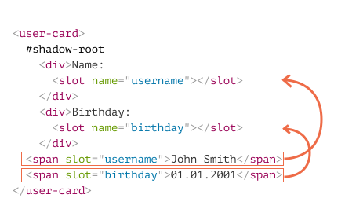

许多类型的组件，例如标签、菜单、照片库等等，需要内容去渲染。
就像浏览器内建的 <select> 需要 <option> 子项，我们的 <custom-tabs> 可能需要实际的标签内容来起作用。并且一个 <custom-menu> 可能需要菜单子项。
使用了 <custom-menu> 的代码如下所示：
<custom-menu>
<title>Candy menu</title>
<item>Lollipop</item>
<item>Fruit Toast</item>
<item>Cup Cake</item>
</custom-menu>……之后，我们的组件应该正确地渲染成具有给定标题和项目、处理菜单事件等的漂亮菜单。
如何实现呢？
我们可以尝试分析元素内容并动态复制重新排列 DOM 节点。这是可能的，但是如果我们要将元素移动到 Shadow DOM，那么文档的 CSS 样式不能在那里应用，因此文档的视觉样式可能会丢失。看起来还需要做一些事情。
幸运的是我们不需要去做。Shadow DOM 支持 <slot> 元素，由 light DOM 中的内容自动填充。
让我们通过一个简单的例子看下插槽是如何工作的。
在这里 <user-card> shadow DOM 提供两个插槽, 从 light DOM 填充：
<script></script>
<user-card>
<span slot="username">John Smith</span>
<span slot="birthday">01.01.2001</span>
</user-card>在 shadow DOM 中，<slot name="X"> 定义了一个“插入点”，一个带有 slot="X" 的元素被渲染的地方。
然后浏览器执行”组合“：它从 light DOM 中获取元素并且渲染到 shadow DOM 中的对应插槽中。最后，正是我们想要的 —— 一个能被填充数据的通用组件。
这是编译后，不考虑组合的 DOM 结构：
<user-card>
#shadow-root
<div>Name:
<slot name="username"></slot>
</div>
<div>Birthday:
<slot name="birthday"></slot>
</div>
<span slot="username">John Smith</span>
<span slot="birthday">01.01.2001</span>
</user-card>我们创建了 shadow DOM，所以它当然就存在了，位于 #shadow-root 之下。现在元素同时拥有 light DOM 和 shadow DOM。
为了渲染 shadow DOM 中的每一个 <slot name="..."> 元素，浏览器在 light DOM 中寻找相同名字的 slot="..."。这些元素在插槽内被渲染：

结果被叫做扁平化（flattened）DOM：
<user-card>
#shadow-root
<div>Name:
<slot name="username">
<!-- slotted element is inserted into the slot -->
<span slot="username">John Smith</span>
</slot>
</div>
<div>Birthday:
<slot name="birthday">
<span slot="birthday">01.01.2001</span>
</slot>
</div>
</user-card>……但是 "flattened" DOM 仅仅被创建用来渲染和事件处理，是“虚拟”的。虽然是渲染出来了，但文档中的节点事实上并没有到处移动！
如果我们调用 querySelector 那就很容易验证：节点仍在它们的位置。
// light DOM <span> 节点位置依然不变，在 `<user-card>` 里
alert( document.querySelector('user-card span').length ); // 2因此，扁平化 DOM 是通过插入插槽从 shadow DOM 派生出来的。浏览器渲染它并且用于样式继承、事件传播。但是 JavaScript 在展平前仍按原样看到文档。
`slot="..."` 属性仅仅对 shadow host 的直接子代 (在我们的例子中的 `<user-card>` 元素) 有效。对于嵌套元素它将被忽略。
例如，这里的第二个 `<span>` 被忽略了(因为它不是 `<user-card>` 的顶层子元素)：
```html
<user-card>
<span slot="username">John Smith</span>
<div>
<!-- invalid slot, must be direct child of user-card -->
<span slot="birthday">01.01.2001</span>
</div>
</user-card>
```如果在 light DOM 里有多个相同插槽名的元素，那么它们会被一个接一个地添加到插槽中。
例如这样：
<user-card>
<span slot="username">John</span>
<span slot="username">Smith</span>
</user-card>给这个扁平化 DOM 两个元素，插入到 <slot name="username"> 里：
<user-card>
#shadow-root
<div>Name:
<slot name="username">
<span slot="username">John</span>
<span slot="username">Smith</span>
</slot>
</div>
<div>Birthday:
<slot name="birthday"></slot>
</div>
</user-card>如果我们在一个 <slot> 内部放点什么，它将成为后备内容。如果 light DOM 中没有相应填充物的话浏览器就展示它。
例如，在这里的 shadow DOM 中，如果 light DOM 中没有 slot="username" 的话 Anonymous 就被渲染。
<div>Name:
<slot name="username">Anonymous</slot>
</div>shadow DOM 中第一个没有名字的 <slot> 是一个默认插槽。它从 light DOM 中获取没有放置在其他位置的所有节点。
例如，让我们把默认插槽添加到 <user-card>，该位置可以收集有关用户的所有未开槽（unslotted）的信息：
<script></script>
<user-card>
<div>I like to swim.</div>
<span slot="username">John Smith</span>
<span slot="birthday">01.01.2001</span>
<div>...And play volleyball too!</div>
</user-card>所有未被插入的 light DOM 内容进入 “其他信息” 字段集。
元素一个接一个的附加到插槽中，因此这两个未插入插槽的信息都在默认插槽中。
扁平化的 DOM 看起来像这样：
<user-card>
#shadow-root
<div>Name:
<slot name="username">
<span slot="username">John Smith</span>
</slot>
</div>
<div>Birthday:
<slot name="birthday">
<span slot="birthday">01.01.2001</span>
</slot>
</div>
<fieldset>
<legend>About me</legend>
<slot>
<div>Hello</div>
<div>I am John!</div>
</slot>
</fieldset>
</user-card>现在让我们回到在本章开头提到的 <custom-menu> 。
我们可以使用插槽来分配元素。
这是 <custom-menu>：
<custom-menu>
<span slot="title">Candy menu</span>
<li slot="item">Lollipop</li>
<li slot="item">Fruit Toast</li>
<li slot="item">Cup Cake</li>
</custom-menu>带有适当插槽的 shadow DOM 模版：
<template id="tmpl">
<style> /* menu styles */ </style>
<div class="menu">
<slot name="title"></slot>
<ul><slot name="item"></slot></ul>
</div>
</template><span slot="title"> 进入 <slot name="title">。<li slot="item">，但是只有一个 <slot name="item">。因此所有带有 slot="item" 的元素都一个接一个地附加到 <slot name="item"> 上，从而形成列表。扁平化的 DOM 变为：
<custom-menu>
#shadow-root
<style> /* menu styles */ </style>
<div class="menu">
<slot name="title">
<span slot="title">Candy menu</span>
</slot>
<ul>
<slot name="item">
<li slot="item">Lollipop</li>
<li slot="item">Fruit Toast</li>
<li slot="item">Cup Cake</li>
</slot>
</ul>
</div>
</custom-menu>可能会注意到，在有效的 DOM 中，<li> 必须是 <ul> 的直接子代。但这是扁平化的 DOM，它描述了组件的渲染方式，这样的事情在这里自然发生。
我们只需要添加一个 click 事件处理程序来打开/关闭列表，并且 <custom-menu> 准备好了：
customElements.define('custom-menu', class extends HTMLElement {
connectedCallback() {
this.attachShadow({mode: 'open'});
// tmpl is the shadow DOM template (above)
this.shadowRoot.append( tmpl.content.cloneNode(true) );
// we can't select light DOM nodes, so let's handle clicks on the slot
this.shadowRoot.querySelector('slot[name="title"]').onclick = () => {
// open/close the menu
this.shadowRoot.querySelector('.menu').classList.toggle('closed');
};
}
});这是完整的演示：
[iframe data-src="menu" height=140 edit]
当然我们可以为它添加更多的功能：事件、方法等。
如果外部代码想动态 添加/移除 菜单项怎么办？
如果 添加/删除 了插槽元素，浏览器将监视插槽并更新渲染。
另外，由于不复制 light DOM 节点，而是仅在插槽中进行渲染，所以内部的变化是立即可见的。
因此我们无需执行任何操作即可更新渲染。但是如果组件想知道插槽的更改，那么可以用 slotchange 事件。
例如，这里的菜单项在 1 秒后动态插入，而且标题在 2 秒后改变。
<custom-menu id="menu">
<span slot="title">Candy menu</span>
</custom-menu>
<script>
customElements.define('custom-menu', class extends HTMLElement {
connectedCallback() {
this.attachShadow({mode: 'open'});
this.shadowRoot.innerHTML = `<div class="menu">
<slot name="title"></slot>
<ul><slot name="item"></slot></ul>
</div>`;
// shadowRoot can't have event handlers, so using the first child
this.shadowRoot.firstElementChild.addEventListener('slotchange',
e => alert("slotchange: " + e.target.name)
);
}
});
setTimeout(() => {
menu.insertAdjacentHTML('beforeEnd', '<li slot="item">Lollipop</li>')
}, 1000);
setTimeout(() => {
menu.querySelector('[slot="title"]').innerHTML = "New menu";
}, 2000);
</script>菜单每次都会更新渲染而无需我们干预。
这里有两个 slotchange 事件：
在初始化时:
slotchange: title 立即触发, 因为来自 light DOM 的 slot="title" 进入了相应的插槽。
1 秒后:
slotchange: item 触发, 当一个新的 <li slot="item"> 被添加。
请注意：2 秒后，如果修改了 slot="title" 的内容，则不会发生 slotchange 事件。因为没有插槽更改。我们修改了 slotted 元素的内容，这是另一回事。
如果我们想通过 JavaScript 跟踪 light DOM 的内部修改，也可以使用更通用的机制: MutationObserver。
最后让我们来谈谈与插槽相关的 JavaScript 方法。
正如我们之前所见，JavaScript 会查看真实的 DOM，不展开。但是如果 shadow 树有 {mode: 'open'} ，那么我们可以找出哪个元素被放进一个插槽，反之亦然，哪个插槽分配了给这个元素：
node.assignedSlot -- 返回 node 分配给的 <slot> 元素。slot.assignedNodes({flatten: true/false}) -- 分配给插槽的 DOM 节点。默认情况下，flatten 选项为 false。如果显式地设置为 true，则它将更深入地查看扁平化 DOM ，如果嵌套了组件，则返回嵌套的插槽，如果未分配节点，则返回备用内容。slot.assignedElements({flatten: true/false}) -- 分配给插槽的 DOM 元素（与上面相同，但仅元素节点）。当我们不仅需要显示已插入内容的内容，还需要在 JavaScript 中对其进行跟踪时，这些方法非常有用。
例如，如果 <custom-menu> 组件想知道它所显示的内容，那么它可以跟踪 slotchange 并从 slot.assignedElements 获取：
<custom-menu id="menu">
<span slot="title">Candy menu</span>
<li slot="item">Lollipop</li>
<li slot="item">Fruit Toast</li>
</custom-menu>
<script>
customElements.define('custom-menu', class extends HTMLElement {
items = []
connectedCallback() {
this.attachShadow({mode: 'open'});
this.shadowRoot.innerHTML = `<div class="menu">
<slot name="title"></slot>
<ul><slot name="item"></slot></ul>
</div>`;
// 插槽能被添加/删除/代替
this.shadowRoot.firstElementChild.addEventListener('slotchange', e => {
let slot = e.target;
if (slot.name == 'item') {
this.items = slot.assignedElements().map(elem => elem.textContent);
alert("Items: " + this.items);
}
});
}
});
// items 在 1 秒后更新
setTimeout(() => {
menu.insertAdjacentHTML('beforeEnd', '<li slot="item">Cup Cake</li>')
}, 1000);
</script>通常，如果一个元素含有 shadow DOM，那么其 light DOM 就不会被展示出来。插槽允许在 shadow DOM 中显示 light DOM 子元素。
插槽有两种：
<slot name="X">...</slot> - 使用 slot="X" 获取 light 子元素。<slot>（随后的未命名插槽将被忽略）- 接受不是插槽的 light 子元素。<slot> 元素的内容作为备用。如果插槽没有 light 型的子元素，就会显示。在其槽内渲染插槽元素的过程称为“组合”。结果称为“扁平化 DOM”。
组合不会真实的去移动节点，从 JavaScript 的视角看 DOM 仍然是相同的。
JavaScript 可以使用以下的方法访问插槽：
slot.assignedNodes/Elements() - 返回插槽内的 节点/元素。node.assignedSlot - 相反的方法，返回一个节点的插槽。如果我们想知道显示的内容，可以使用以下方法跟踪插槽位的内容：
slotchange 事件 - 在插槽第一次填充时触发，并且在插槽元素的 添加/删除/替换 操作（而不是其子元素）时触发，插槽是 event.target 。现在，在 shadow DOM 中有来自 light DOM 的元素时，让我们看看如何正确的设置样式。基本规则是 shadow 元素在内部设置样式，light 元素在外部设置样式，但是有一些例外。
我们将在下一章中看到详细内容。